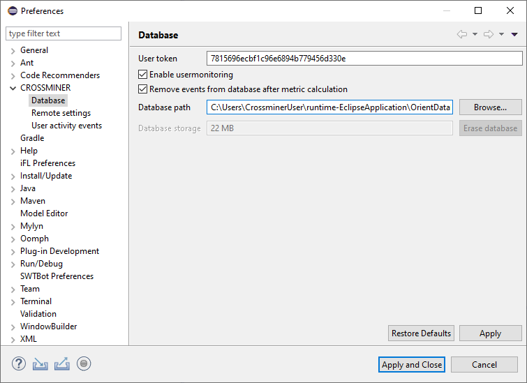

To properly use the plug-in user monitoring feature, you have to set some of the settings which is required for user monitoring. You have to enter the User token.
In this page you can also disable user monitoring and change database path. These action needs an eclipse restart.

Plug-in remote settings